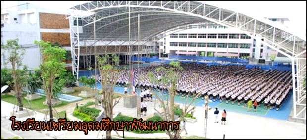
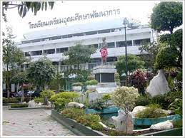

Triamudomsuksa Pattanakarn School
โรงเรียนเตรียมอุดมศึกษาพัฒนาการ หรือเป็นที่รู้จักในนาม เตรียมพัฒน์ เป็นโรงเรียน ประเภทสหศึกษา ระดับมัธยมศึกษา สังกัดสำนักงานเขตพื้นที่การศึกษามัธยมศึกษากรุงเทพมหานคร เขต 2
 